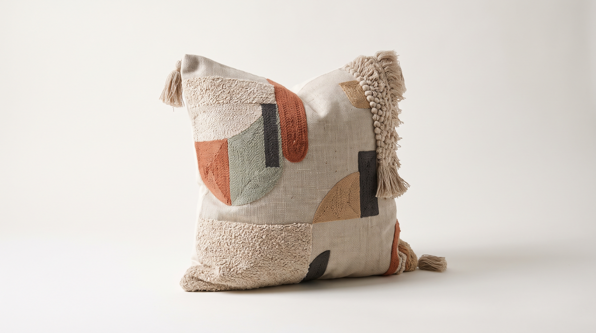
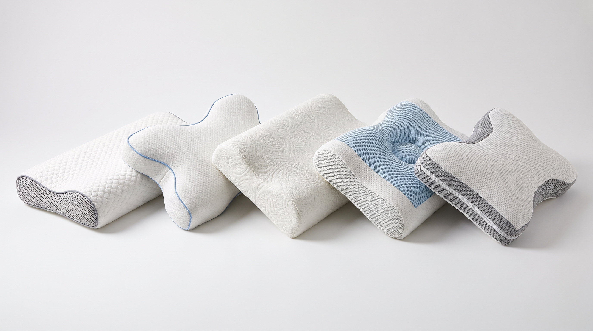
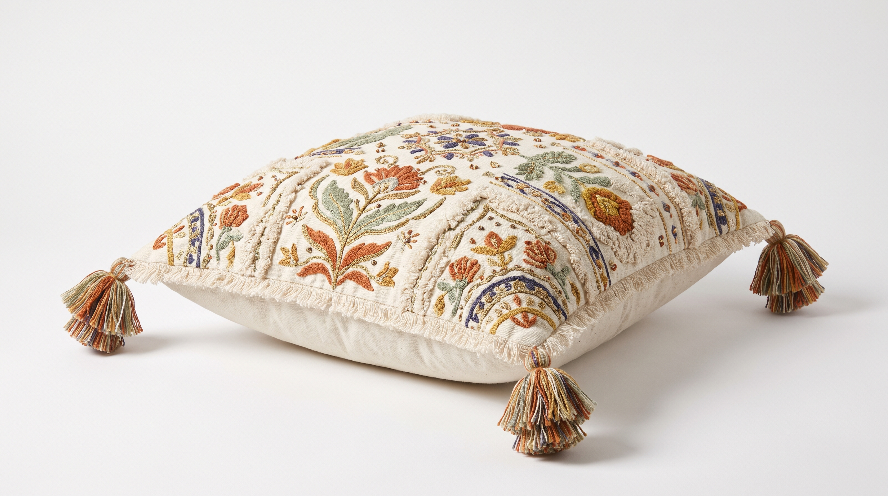
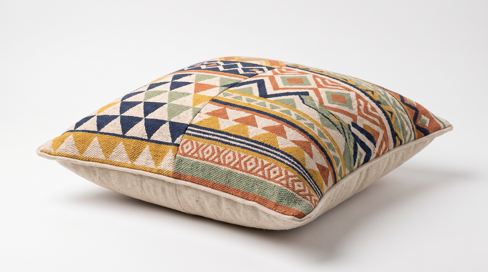
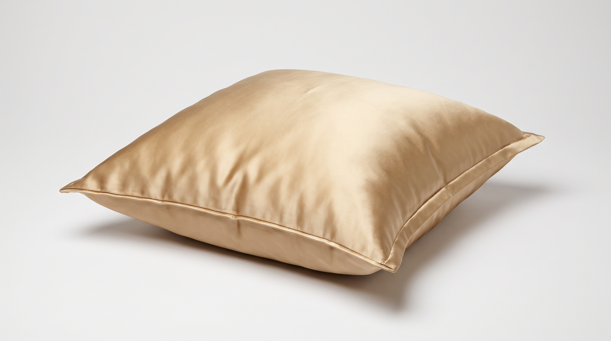
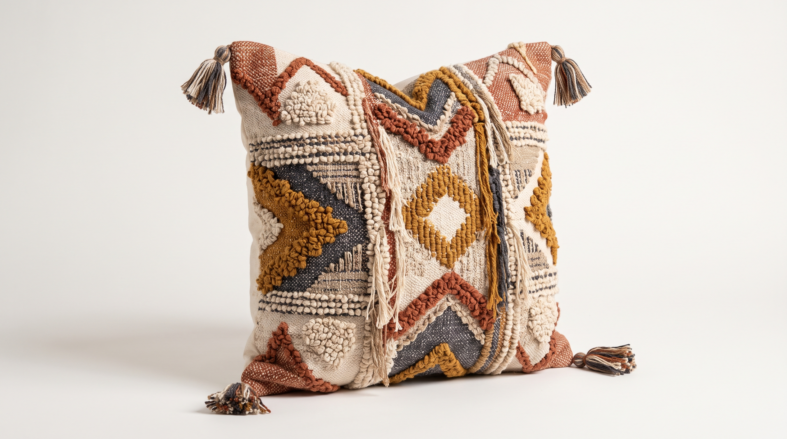
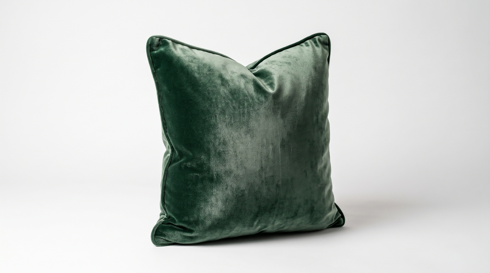
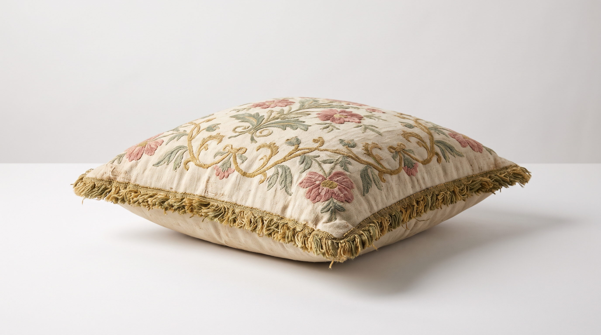

AURA Bulutli Sibir Momigʻi 900
Uch kamerali arxitektura: markazda boʻyinni tutib turuvchi elastik par qatlami, ustki va ostki qismda esa 95% oq arktik gʻoz momigʻi.
AURA YOSTIQ har bir insonning yelka kengligi, uyqu holati va tana haroratiga moslashuvchi 5 qatlamli anatomik yostiqlarni qoʻl mehnatida yaratadi. Tongda boʻyin toliqishi emas, balki chuqur tiklanish hissi bilan uygʻoning.

Notoʻgʻri balandlikdagi yostiq boʻyin umurtqasini qiyshaytirib, bosh ogʻrigʻi va uyqusizlikka sabab boʻladi. Toʻrtta koʻrsatkichni belgilang va algoritmimiz sizga aniq balandlik hamda zichlikni chiqarib beradi.
yonboshlab uxlash va 46 sm yelka kengligi uchun 13.9 sm balandlikdagi AURA Bulutli Sibir Momigʻi 900 umurtqa pogʻonasini ideal gorizontal chiziqda ushlab turadi.

Uch kamerali arxitektura: markazda boʻyinni tutib turuvchi elastik par qatlami, ustki va ostki qismda esa 95% oq arktik gʻoz momigʻi.

Boʻyin osteoxondrozi va yelka qotishini bartaraf etish uchun ikki xil balandlikdagi anatomik egri chiziq va sovutuvchi muz-ipak gʻilof.

100% uzun tolali tabiiy tut ipagidan qavatma-qavat tortib tayyorlangan. Yuz terisi namligini saqlaydi va tungi terlashni butunlay toʻxtatadi.

Shveysariya Alp oʻtloqlari organik paxtasi va gʻoz momigʻi uygʻunligi. Har qanday holatda uxlaydiganlar uchun oltin oʻrtalik.

Daraxt sharbatidan olingan tabiiy Talalay lateksi 1 200 ta vertikal shamollatish kanallari bilan boʻyinga tezkor elastik javob qaytaradi.

Keng karavotlar uchun maxsus 90 sm formatdagi shohona yostiq. Kumush ionli mikro-ipak tolalari tungi haroratni 2.4°C ga salqinroq saqlaydi.
Oddiy yostiqlar bir xil sintetik tolalar bilan toʻldirilgani bois 3 oyda yassilanib qoladi. AURA besh qavatli mustaqil kamera tizimidan foydalanadi.
Yuz terisida burishish va ishqalanish izlarini qoldirmaydigan ultra-silliq toʻqima. Buxoro tut ipagi tarkibidagi tabiiy seritsin oqsili uyqu davomida teri namligini saqlaydi va chang kanalarining kirishiga 100% toʻsqinlik qiladi.
Biz kimyoviy oqartiruvchilar va sintetik poliesterdan butunlay voz kechganmiz. Xomashyo Alp togʻ buloqlari suvida 8 marta yuvilib, kumush ionlari bilan boyitiladi.

Har bir AURA yostigʻiga joylashtiriladigan gʻoz momigʻi havo oqimi yordamida ogʻir patlardan tozalanadi. Faqatgina eng yengil va issiqlikni oʻz-oʻzidan boshqaruvchi momiq yostiqning yuqori kamerasiga joylanadi.
Toshkent va Syurix uyqu klinikalarida 420 nafar ishtirokchi oʻrtasida oʻtkazilgan 60 kunlik kuzatuv natijasida tungi uygʻonishlar soni 62% ga kamaygani tasdiqlandi.
| Koʻrsatkich | AURA Bulutli Momigʻi | AURA Ortopedik Kontur | AURA Buxoro Tut Ipagi | Oddiy Sintetik Yostiq |
|---|---|---|---|---|
| Xizmat muddati | 10–12 yil | 8–10 yil | 12–15 yil | 6–9 oy |
| Boʻyin tayanch indeksi | 97.5% | 99.2% | 96.8% | 44.0% |
| Havo aylanishi (CFM) | 142 CFM | 128 CFM | 164 CFM | 19 CFM |
| Gʻilof tarkibi | 400 TC Misr Sateni | Muz-Ipak va Organik Paxta | 22 Momme 6A Tut Ipagi | Poliester / Mikrofibra |
| 100 kunlik uyqu sinovi | Mavjud (Bepul almashtirish) | Mavjud (Bepul almashtirish) | Mavjud (Bepul almashtirish) | Mavjud emas |
Avval bemorlarimga qattiq ortopedik yostiqlarni tavsiya qilganimda, ular yostiqning qattiqligidan shikoyat qilishar edi. AURA Ortopedik Kontur Pro ustki qismidagi yumshoq organik qatlam va markaziy tayanch tufayli birinchi kechadanoq boʻyin qon aylanishini yaxshilaydi.
AURA Bulutli Sibir Momigʻi 900 modelini xarid qilganimizdan soʻng, ertalabki yelka uvishishi butunlay yoʻqoldi. Boshni qoʻyganda yostiq xuddi tirikdek sekin choʻkib, boʻyin boʻshligʻini toʻldiradi.
Kuniga 11 soat monitor qarshisida ishlaganim sababli boʻynim doim tarang boʻlardi. Laboratoriya kalkulyatori menga 14 sm balandlikni hisoblab berdi — natija kutganimdan ikki barobar aʼlo.
Shourumimizga tashrif buyurib, 15 daqiqalik boʻyin bosimi diagnostikasidan oʻting yoki quyidagi shakl orqali oʻzingizga mos yostiq parametrlarini buyurtma qiling.
Toshkent shahri, Yunusobod tumani, Amir Temur shoh koʻchasi, 108B-uy. Maxsus sokin sinov xonalarida barcha 6 ta yostiq modelini yotib sinab koʻrish imkoniyati mavjud.
Toʻy sovgʻasi yoki oilaviy yotoqxona uchun har bir yostiq burchagiga #8FA9D6 moviy ipak ipda bosh harflar kashtasini tushirib beramiz.